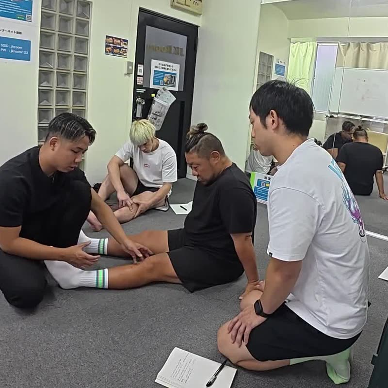
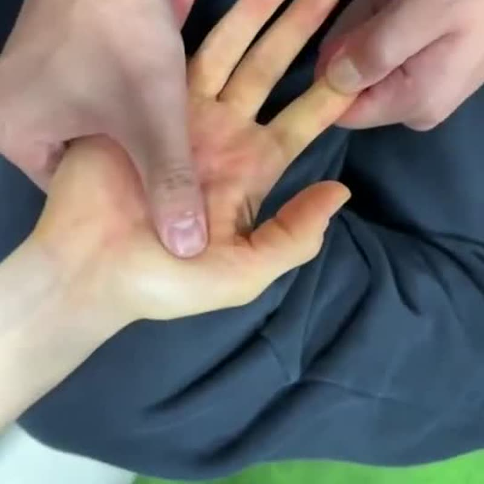
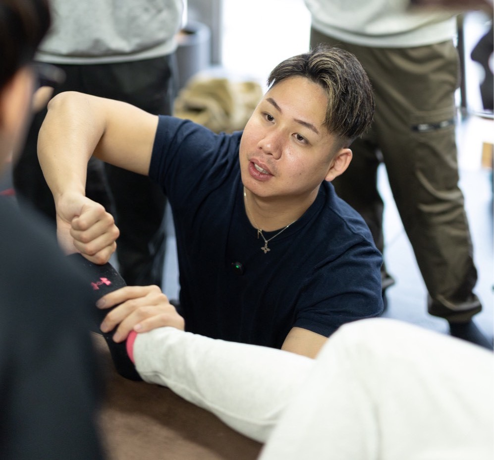

About
協会概要
コンディショニングジャパン協会の基本情報です。
現在は設立の準備を進めています。
基本情報

| 名称 | コンディショニングジャパン協会 Conditioning Japan |
|---|---|
| 状況 | 設立準備中 |
| 創設者 | 原口 慶篤（はらぐち のりあつ） |
| 活動内容 | 身体に関わる専門職向けの技術教育・セミナーの企画と運営 認定講師制度の準備 企業・施設向けの研修、登壇 |
| お問い合わせ | お問い合わせページ |



Education policy
教育方針

- 評価 → 介入 → 再評価の順で考える力を、すべての講座の土台にします。
- 施術と、動作・運動をつなげて学びます。
- 実技の練習を重視し、受講生が自分の現場で再び行える形を目指します。
- 教材と説明は、新しい知見や現場の経験に合わせて見直します。



Code of conduct
倫理・行動指針

効果を約束しない
施術や運動による変化には個人差があります。結果を保証する説明や広告はしません。
業務範囲を守る
医療機関での診断・治療に代わるものとして扱わず、必要に応じて受診を勧めます。
安全と同意を優先する
身体に触れる練習では、事前の説明と相手の同意を前提にし、痛みや不安があればすぐに中止します。
他を下げない
他の団体や技術を否定して自分たちの価値を語ることはしません。
根拠を区別する
確かめられている事実と、仮説や考え方を区別して伝えます。
学び続ける
講師も受講生も、知識と技術を学び直し、更新し続けます。